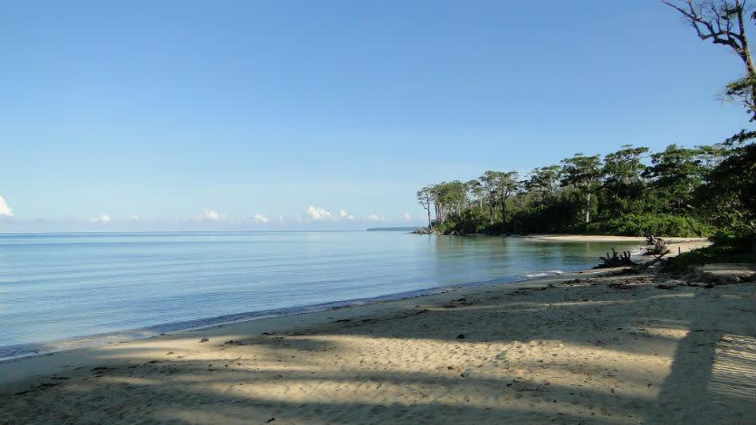

Baratang
Venture into the adventurous landscapes of Baratang Island, a destination known for its natural wonders, dense mangrove forests, and fascinating geological formations. The journey through narrow mangrove creeks by boat creates an exciting and scenic experience surrounded by calm waters and thick greenery. One of the island’s most remarkable attractions is its limestone caves, filled with unique rock formations shaped naturally over thousands of years. Baratang is also home to rare mud volcanoes that add to the island’s geological significance and adventurous appeal. The untouched forests, peaceful waterways, and raw natural beauty create an atmosphere of exploration and discovery. Baratang Island offers visitors a thrilling combination of nature, adventure, and scenic beauty unlike any other destination in the Andaman Islands.